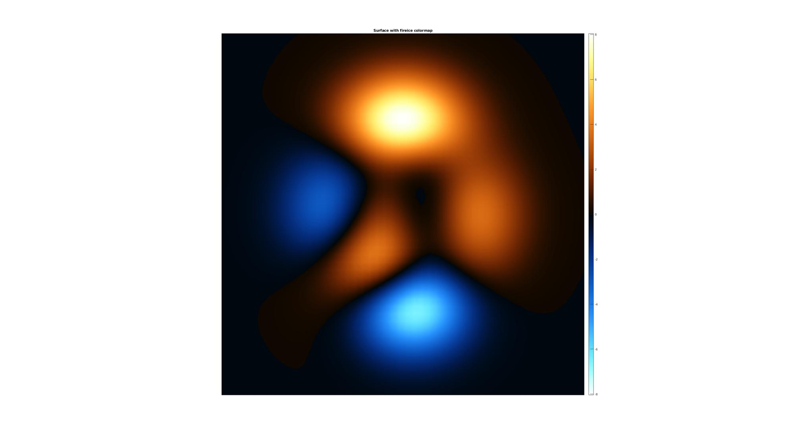

rgbImage2ColorMap
Below is a demonstration of the features of the rgbImage2ColorMap function
Contents
Syntax
[C]=rgbImage2ColorMap(A,optStruct);
Description
The rgbImage2ColorMap creates a colormap based on an input RGB (red green blue) color image. Colormap colors are based on the intensities occuring in the image. Therefore monotonic color images probably yeild the best results.
Examples
clear; close all; clc;
Plot settings
fontSize=10;
Example: harvest colormap from image data
Import example images
%Set main folder defaultFolder = fileparts(fileparts(mfilename('fullpath'))); pathName=fullfile(defaultFolder,'data','PICT'); % Load example images loadName=fullfile(pathName,'leaf1.jpg'); %Load name X_leaf=importdata(loadName); %Import image X_leaf_intensity=mean(double(X_leaf),3); loadName=fullfile(pathName,'fire.jpg'); %Load name X_fire=importdata(loadName); %Import image X_fire=X_fire(1:3:end,1:3:end,:); %Reduce resolution X_fire_intensity=mean(double(X_fire),3);
Build colormaps from imported images
optStruct.n=250; %Number entries in the colormap optStruct.numBins=25; %Number of bins to sample the colors (colors are averages across bins) optStruct.normFactor=255; %Normalisation factor, e.g. max(X(:)) %Leaf colormap [C_leaf]=rgbImage2ColorMap(X_leaf,optStruct); %Fire colormap [C_fire]=rgbImage2ColorMap(X_fire,optStruct);
Create example patch data to color surfaces
[X,Y,Z]=peaks(50);
Show colormap create results
cFigure; %Show images subplot(2,3,1); imagesc(X_leaf); axis equal; axis tight; axis off; hold on; title('RGB leaf image'); hs=subplot(2,3,2); imagesc(X_leaf_intensity); axis equal; axis tight; axis off; hold on; title('Colormapped image'); colormap(hs,C_leaf); colorbar; caxis([0 255]); subplot(2,3,4); imagesc(X_fire); axis equal; axis tight; axis off; hold on; title('RGB fire image'); hs=subplot(2,3,5); imagesc(X_fire_intensity); axis equal; axis tight; axis off; hold on; title('Colormapped image'); colormap(hs,C_fire); colorbar; caxis([0 255]); %Show surface data hs=subplot(2,3,3); h=surf(X,Y,Z); axis tight; axis off; hold on; set(h,'EdgeColor','none'); shading interp; camlight('headlight'); lighting phong; title('Surface with leaf colormap'); colormap(hs,C_leaf); colorbar; drawnow; hs=subplot(2,3,6); h=surf(X,Y,Z); axis tight; axis off; hold on; set(h,'EdgeColor','none'); shading interp; camlight('headlight'); lighting phong; title('Surface with fire colormap'); colormap(hs,C_fire); colorbar; drawnow;

Example: adjust harvested colormap
Use fact that flipped fire colormap looks like ice colormap and combine
C_fireice=[rot90(C_fire,2); C_fire(2:end,:)]; hs=cFigure; h=surf(X,Y,Z); axis equal; axis tight; axis off; hold on; view(2); set(h,'EdgeColor','none'); shading interp; title('Surface with fireice colormap'); colormap(hs,C_fireice); colorbar; caxis([-max(abs(Z(:))) max(abs(Z(:)))]); drawnow;

GIBBON www.gibboncode.org
Kevin Mattheus Moerman, gibbon.toolbox@gmail.com
GIBBON footer text
License: https://github.com/gibbonCode/GIBBON/blob/master/LICENSE
GIBBON: The Geometry and Image-based Bioengineering add-On. A toolbox for image segmentation, image-based modeling, meshing, and finite element analysis.
Copyright (C) 2019 Kevin Mattheus Moerman
This program is free software: you can redistribute it and/or modify it under the terms of the GNU General Public License as published by the Free Software Foundation, either version 3 of the License, or (at your option) any later version.
This program is distributed in the hope that it will be useful, but WITHOUT ANY WARRANTY; without even the implied warranty of MERCHANTABILITY or FITNESS FOR A PARTICULAR PURPOSE. See the GNU General Public License for more details.
You should have received a copy of the GNU General Public License along with this program. If not, see http://www.gnu.org/licenses/.